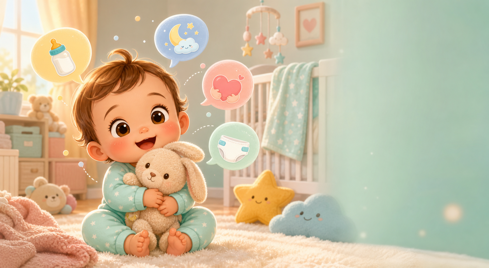

Baby Voice Studio
咿呀翻译器
把宝宝的哭声、咿呀声和小表情整理成大人听得懂的照护提示。
宝宝信号
选择一种声音，看看它可能在表达什么。
点击圆钮，模拟监听宝宝声音
可信度 92%
声音：短促、有节奏
“我有点饿，想喝奶啦。”
这种哭声通常节奏比较规律，停顿后会继续寻找安抚，常见于进食时间前后。
温馨提醒
这是照护辅助演示，不能替代医生诊断；如果宝宝持续尖锐哭闹、发热、呼吸异常或精神差，请及时就医。